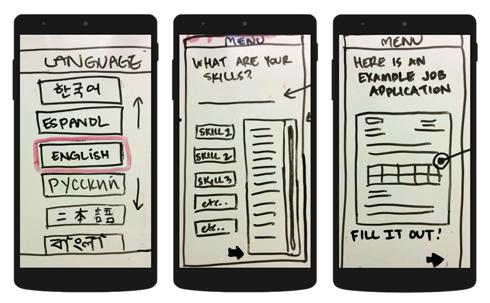
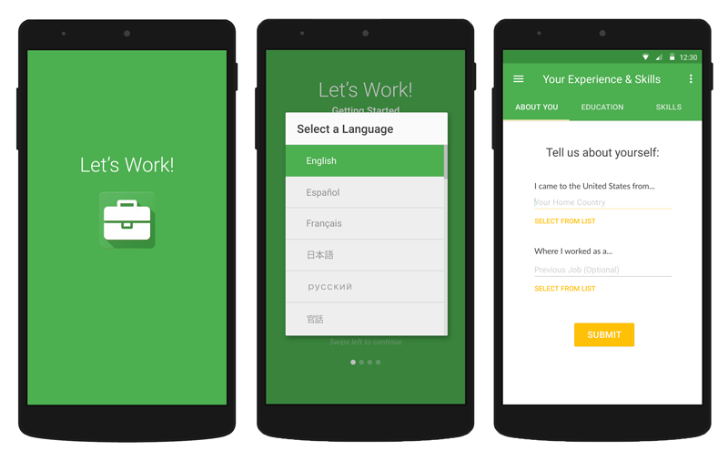

Design Challenge
How might we improve educational experiences for new immigrants and refugees?
Inspiration Phase
Within this phase we:
- Formed a team with a diverse set of backgrounds from the community XX+UX
- Selected our design challenge
- Researched established methods, classes and communities
- Created a set of interview questions and an online survey
- Established our incoming assumptions
- Interviewed experts, immigrants and sat in on classes
Ideation Phase
Within this phase we:
- Shared all our insights from interviews and observation
- Formed common themes
- Created insight statements
- Explored design opportunities through “How Might We…” statements
- Brainstormed solutions
- Determined what to prototype
- Created a storyboard

Key themes discovered through interviews:
- Building A Community: Religious and community centers are common points of support, as learning about the experiences of other immigrants and sharing resources is invaluable for assimilation.
- We’re Not In English Class Anymore: Regardless of English speaking level, most immigrants struggle with confidence in their speaking ability - “textbook English” is very different from slang-laden, day-to-day English.
- A Transferrable Skill?: Language limitations and cultural differences make the job search process a struggle. Questions on job applications do not always translate and interview processes are misunderstood.
“How might we…” design opportunities:
- How might we design a context for immigrants to practice English skills in a practical, applied way for everyday life?
- How might we create a centralized platform that disseminates information through organizations that immigrants rely on?
- How might we lessen the difficulty for immigrants to understand the application process and successfully obtain a job?
After brainstorming solutions, and deciding on our product, we began creating a visual storyboard and initial prototype.
Implementation Phase
Within this phase we:
- Formed a team with a diverse set of backgrounds from the community XX+UX
- Created and tested a prototype
- Developed a pitch
- Explored funding opportunities and plans for distribution
- Updated the prototype
- Reflected on our process
Using our storyboard I created the initial clickable prototype and began user testing.
Initial Prototype
After interviewing recent immigrants, experts within Catholic Charities, and pulling in results from our online survey, we created an initial prototype of our product; a mobile application that acts as both a reference guide and learning tool for immigrants who need an entry-level job. 
The MVP gave us valuable insight into how immigrants would respond to the application. Overall we had very positive feedback, but received insightful ways to improve the application. We conducted user testing with one member directing the user, while the other took notes.
Updated Prototype
Using the feedback we gained from user testing we re-evaluated the flow of the application and added new sections, including an introduction to better explain the purpose of the application to the user. 